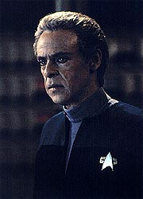
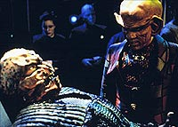
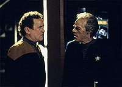
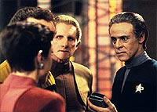
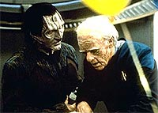

MANCHETE
DO EPISDIO
Premissa
bizarra no se salva nem com
interpretao espetacular de Bashir
Episdio
anterior | Prximo
episdio
Sinopse:
Data Estelar:
desconhecida.
Bashir est almoando com Garak
no Replimat, resmungando sobre a chegada do seu aniversrio de 30
anos. Quark se aproxima com Altovar, um Letheano. O Aliengena
quer obter uma remessa de gel biomimtico, uma substncia
rigidamente controlada pelas leis da Federao e extremamente
perigosa. Bashir obviamente nega tal pedido, para desapontamento
do aliengena. Mais tarde, Bashir surpreende Altovar revirando a
sua enfermaria, mas quando tenta det-lo imobilizado e cai
inconsciente, vtima do que parece ser uma descarga eltrica
dirigida para sua cabea.

Bashir
acorda, para encontrar uma estao aparentemente deserta, escura
e com poucos sistemas ainda funcionando. Ele tambm observa o seu
cabelo ficando grisalho progressivamente. O mdico encontra Quark
petrificado, atrs do balco do seu estabelecimento, morrendo de
medo, encolhido nas sombras, enquanto alguma criatura escondida e
ainda no identificada destri o seu bar. Quark acaba por fugir
assustado. Bashir encontra Garak no escritrio de Odo, que diz
que no parece haver viva alma na estao e que nada funciona
alm das mais bsicas funes de suporte de vida e locomoo
(como turboelevadores e portas automticas).
Eles decidem se separar para tentar chegar mais rpido ao cerne
do problema que assola DS9. Bashir perseguido por Altovar em um
corredor do anel de habitao e tem sorte em escapar pelo
turbo-elevador. Ao sair do elevador, ele encontra Kira, Odo, Dax e
O'Brien discutindo a situao na sala de conferncias. Os seus
quatro colegas agem estranhamente e Bashir, agora aparentando ter
uns 55 anos, no consegue obter respostas que faam sentido de
nenhum deles. Eles apenas insistem que Altovar quer destruir a
estao, mas nada conseguem esclarecer sobre o ocorrido at ento.
O'Brien faz um reparo parcial do receptor subespacial. Podemos
ouvir sussurros, iguais aos que vm acompanhando Bashir desde que
ele acordou. Agora ele consegue compreender as vozes. Elas so
dos reais tripulantes de DS9, que dizem que Bashir est em coma
devido ao ataque teleptico de Altovar e que ele est beira
da morte. Depois de examinar os outros quatro e a si prprio com
um tricorder, Bashir conclui que de fato ele est em coma, que
eles so apenas representaes de diferentes facetas de sua
personalidade, a "estao" uma representao de
sua mente e "Altovar" uma representao do dano
teleptico que o real Letheano causou ao seu crebro.
Mas, antes que possa arquitetar um plano para reparar a "estao"
e se salvar, "Altovar" leva "Dax" e Bashir se
v jogando tnis com "Garak" no meio do
"Promenade". Bashir se dirige ao "OPS" para
tentar reparar o dano. Ele tenta levar "Sisko" com ele,
mas o "comandante" tambm desaparece pelas mos de
"Altovar". Ele no para de envelhecer e encontra
"Kira" morta e "Odo" morrendo. Ele encontra
"O'Brien" pelo caminho, mas surpreendentemente vai parar
de novo no "Quark's", onde apostas so feitas para ver
quanto tempo ele ainda vai resistir. "O'Brien" morre
subitamente e "Altovar" tambm acaba com a vida de
"Quark".

Bashir
foge e acaba encontrando novamente Garak, que o aconselha
insistentemente a desistir, mas o doutor acaba o convencendo a
ajud-lo a chegar ao "OPS". Ele assim o consegue, j
com aparentemente 100 anos, e tem uma festa surpresa de aniversrio
a sua espera. Com direito a uma garota Dabo para cantar
"Parabns". Bashir no desiste e acaba descobrindo que
"Garak" na realidade era "Altovar" o tempo
todo. Bashir volta a "enfermaria", que ele considera o
centro de sua vida (e no o "OPS") e comea a fazer
reparos, que agora surtem efeito, para a surpresa de
"Altovar". Bashir o prende em um campo de quarentena e o
esteriliza completamente. Bashir acorda na enfermaria, para alvio
de Sisko e cia.
Bashir e Garak tm novamente um almoo juntos. O real Altovar
foi preso por Odo, pouco depois de atacar Bashir, e o doutor diz
que, aps a experincia que teve, fazer 30 anos no nada de
mais. Garak ficou fascinado que a mente do doutor o tenha
escolhido como o vilo da histria. O Cardassiano observa que,
apesar de tudo pelo qual eles j passaram juntos, Bashir ainda no
confia nele. Ele diz que ainda existe esperana para o jovem
doutor.
Comentrios:
Aqui temos um claro caso em que um roteiro cheio de defeitos no
pde ser salvo nem mesmo pelos maiores esforos dos principais
envolvidos em sua execuo, notadamente o ator Siddig El Fadil e
o maquiador-chefe Michael Westmore. O roteiro tem pouca orientao
ou urgncia, sem falar em um excesso de exposio, com uma
total falta de sutileza. E uma irnica falta de imaginao
(devido premissa da histria). Bashir merecia mais do que
isso. Mais detalhes, sem precisar entrar em coma e acabar lutando
pela vida dentro da sua prpria mente no processo, nas linhas
abaixo.

Falemos
inicialmente sobre os poucos bons momentos desta semana. As
melhores coisas do episdio so as duas cenas de Bashir e Garak,
que iniciam e terminam o segmento respectivamente. A cena inicial
continua a nos mostrar as particularidades da literatura
Cardassiana (ver "The
Wire" sobre isso) e apresenta o fato de que Bashir
tem medo de envelhecer. Este foi o nico simbolismo que realmente
funcionou. Se ele estava to impressionado com a chegada dos seus
30 anos pouco antes do ataque de Altovar, faz sentido que sua
mente utilizasse tal medo na forma de representar a sua iminente
morte. A cena final mantm aceso o relacionamento entre o mdico
e o "alfaiate". Tirando os extremos do segmento, o miolo
largamente podre e fruto de um roteiro incerto, que no
deveria ter entrado em produo.
Felizmente o episdio no tentou carregar o seu mistrio at o
final, o que seria largamente insustentvel. De fato ele demorou
at demais em revelar um segredo que j era largamente reconhecvel
naquele momento. O mais inteligente em tal situao chegar o
mais rpido possvel na posio de fazer uma anlise do
personagem. Voc est na mente de um personagem, um fascinante
lugar para oferecer simultaneamente uma envolvente aura surreal e
um profundo estudo do personagem. Infelizmente nada disso
aconteceu.
O ngulo simblico do episdio foi bastante tmido e pouco
inspirado e, pior que tudo, largamente explicado com doses macias
de exposio e falta de sutileza. Simbolismo explicado no
simbolismo nenhum. O fato de Bashir utilizar a estao para o
cenrio de suas alucinaes e projetar as diferentes facetas de
sua personalidade nas verses dos personagens regulares em sua
mente uma grande convenincia da produo da srie. E mesmo
esse cenrio restrito foi mal aproveitado.
verdade que tivemos alguns lampejos de inventividade. O sbito
jogo de tnis com "Garak", improvisado no meio do
"Promenade", e a inesperada festa de aniversrio no
"OPS", com direito a uma garota Dabo cantando
"parabns para voc" (sem falar nas bolas de tnis
caindo de onde deveriam estar as componentes do computador
central) foram boas idias. Porm foram poucas e ainda assim
muito conservadoras e pouco coesas. Ns deveramos ter tido uma
metralhadora incessante de tais reviravoltas, com pouca exposio
e um forte simbolismo. Infelizmente ficamos longe de tal ideal.
Chegando ao personagem, a escolhida distribuio das diferentes
facetas da personalidade de Bashir pelos outros personagens faz
pouco sentido (talvez as nicas excees tenham sido
"Sisko" e "Garak" diante das circunstncias)
em termos do que conhecemos sobre os reais personagens. E tal cenrio
como um todo falha completamente em oferecer algum tipo de viso
ou pensamento relevante de Bashir a respeito dos seus colegas de
estao. Isso sem falar na falta de consistncia.
"Quark" inicialmente parece representar o medo de
Bashir, para pouco depois, recolher apostas sobre quando o doutor
vai morrer. Foi outra m e pouco sutil idia usar a imagem de
Altovar como um vilo a ser vencido dentro da mente de Bashir,
isso no era necessrio.

O
episdio faz a escolha em simplesmente envelhecer Bashir,
aproximando-o da morte medida que suas facetas vo sendo
eliminadas, sem se preocupar em produzir alguma mudana perceptvel
em Bashir com tais "mortes". Isso j um problema,
mas o problema maior vem do fato de que o roteiro nunca explica
"o que sobrou". Que parte de Bashir fez a diferena no
final? O que fez o seu quadril sarar na volta enfermaria? O que
possibilitou a sua "vitria" final sobre
"Altovar"? O roteiro parece no dar a mnima. Alm da
manufatura da "vitria" em si.
O roteiro lembra do ch Tarkeliano (caracterstica de Bashir
desde sempre) e mesmo dos cursos de extenso em engenharia do
doutor, citados em "Armageddon
Game", mas acabam esquecendo a interessante histria
da "bailarina de Bashir", do mesmo episdio. O que
seria uma escolha do doutor que faria todo sentido ser trazida
para cima da mesa de discusso do episdio. Mais uma chance
desperdiada.
A direo de Singer foi excelente. O esforo dele para
coreografar a longa cena de discusso na sala de conferncias e
manter a cmera em movimento e fluida por toda a tomada
largamente apreciado. Trabalhou bastante para trazer uma aura
surreal que tanto o episdio precisava e que era mal construda
pelo roteiro. West tambm tirou "gua de pedra" com um
apertado oramento e poucas referncias ou suporte do roteiro.
Westmore tambm esteve em plena forma, nos estgios finais da
maquiagem de Bashir e tambm na de Altovar.

O
destaque da semana vai obviamente para El Fadil. Talvez a mais
perfeita representao de uma pessoa envelhecida em Jornada.
A riqueza e a consistncia do gestual foram de uma competncia e
de uma naturalidade admirveis. O ator realmente se entregou ao
papel. Quando Bashir acorda na enfermaria, o choque produzido pela
diferena nas feies e no gestual notvel. Os demais
atores regulares se esforaram e fizeram muito, dentro da bizarra
situao em que foram inseridos. Shimerman fazendo um sotaque
britnico foi um outro bvio e absurdo destaque.
Rivers interpretou um "Vilo de histria em
quadrinhos" (TM) perfeio (o que no um elogio).
Muito pobre. Gillespie e Forester fizeram o pouco que foi pedido
delas. O destaque fica com o sempre irrepreensvel Robinson.
Excelente mesmo sem ser muito exigido.
O episdio tem a marca de seu criador, Joe Menoski. Ele
participou da criao dos seguintes episdios de DS9: "Dramatis
Personae", "Rivals",
"Distant Voices" e "Time's Orphan".
Todos com premissas bizarras e todos se tornando fracassos para a
srie.
O gel biomimtico voltaria ser citado, como capaz de ser
utilizado na fabricao de armas biognicas, em "In the
Pale Moonlight", clssico absoluto da sexta temporada da
srie.
"Distant Voices" mais um pssimo episdio de
DS9, que toma um tortuoso e errtico caminho para chegar
condio de poder fazer um estudo profundo na personalidade
de Bashir. A triste constatao que, apesar de estarmos na
mente do personagem por quase todo o episdio, tal
"estudo" se prova um extremo desapontamento, em que
descobrimos surpreendentemente pouco (se algo) sobre o jovem
doutor. O confronto final entre Bashir e "Altovar"
completamente simplrio e artificial, um verdadeiro arremedo de
resoluo.
Citaes
Kira - "I've had enough
of this. I am not some figment of your imagination!"
("Pra mim j basta. Eu no sou uma fasca da sua imaginao!")
Garak - "The challenge [of Cardassian mysteries] is
determining exactly who is guilty of what."
("O desafio [das obras de mistrio Cardassianas]
determinar exatamente quem culpado do qu."
Garak - "I'm part of you, remember? I know what you know.
Well, maybe a little more, hm?"
("Eu sou parte de voc, lembra? Eu sei o que voc sabe.
Bem, talvez um pouco mais, hm?")
Sisko - "Just doing my job."
("S estou fazendo meu trabalho.")
Bashir - "No, you're not --you're doing my job."
("No, no est --voc est fazendo o meu
trabalho.")
Garak - "And what I find interesting is how your mind
ended up casting me in the role of the villain! [...] To think,
after all this time, all our lunches together, you still don't
trust me. There's hope for you yet, doctor."
("E o que acho interessante como sua mente acabou me
escalando no papel do vilo! [...] Pensar, depois de tudo, de
nossos almoos juntos, que voc ainda no confia em mim. Ainda
h esperana para voc, doutor.")
Trivia:
 A histria do episdio foi chamada originalmente de "Too
Many Rooms" e foi criada por Joe Menoski, ainda vivendo na
Europa na poca. O conceito original no utilizava os demais
personagens regulares na representao da mente de Bashir e o ngulo
do simbolismo era muito mais extremo. Foi Ron Moore que sugeriu as
modificaes que possibilitaram o aproveitamento da histria,
especialmente levando em conta o oramento da srie. Ento
Wolfe e Behr escreveram o roteiro. Alis, Bashir o personagem
com quem Wolfe mais se identifica.
A histria do episdio foi chamada originalmente de "Too
Many Rooms" e foi criada por Joe Menoski, ainda vivendo na
Europa na poca. O conceito original no utilizava os demais
personagens regulares na representao da mente de Bashir e o ngulo
do simbolismo era muito mais extremo. Foi Ron Moore que sugeriu as
modificaes que possibilitaram o aproveitamento da histria,
especialmente levando em conta o oramento da srie. Ento
Wolfe e Behr escreveram o roteiro. Alis, Bashir o personagem
com quem Wolfe mais se identifica.
El Fadil esteve em praticamente cada cena e teve um imenso
trabalho de maquiagem (a "pior experincia da minha
vida", segundo o ator), que durava trs horas por aplicao.
Anos mais tarde ele declarou que ganhou um pagamento extra por no
ter tido o descanso regular entre duas jornadas de trabalho
consecutivas. E tambm pelo estouro de tempo de uma tpica
jornada de trabalho.
Ren Auberjonois usou o seu treinamento em mmica (sentando em
uma almofada) na cena em que Odo aparece "se
derretendo". Na cena em que Bashir encontra Odo, Kira,
O'Brien e Dax na sala de conferncias, o diretor Alexander Singer
teve grande cuidado em manter a cena interessante visualmente,
utilizando a "cmera na mo" (uma steadycam no
conseguiria fazer o servio), manejada pelo prprio Jonathan
West. Singer queria uma tomada nica de toda a cena, mesmo que
fosse editar um eventual close de Bashir na verso final. Ele
conseguiu l pela quinta tentativa. O diretor ficou to
orgulhoso com o resultado final que passou a usar a tomada em suas
aulas de edio e direo.
West tambm fez coisas que nunca tinha feito antes, apagando todo
o cenrio (s deixando aceso os campos de estrelas que
normalmente enfeitam as janelas voltadas para o espao da estao)
e acendendo elementos especficos para necessidade cada cena. Um
procedimento extremamente demorado.
O episdio recebeu um prmio Emmy de melhor maquiagem. O
maquiador Michael Westmore acredita que a maquiagem final
(envelhecida) de Bashir foi o que valeu o prmio. Mas diz tambm
que Altovar foi um aliengena bastante diferente do que ele j
havia feito para qualquer srie de Jornada. Outro milagre
da maquiagem foi o cadver de O'Brien, composto por uma mscara
de Colm Meaney e aplicada em um manequim. Dennis McCarthy tambm
tentou inovar na trilha sonora adicionando elementos de Ligeti
(famoso compositor minimalista hngaro).
Considerando acontecimentos posteriores da srie (o fato de
Bashir ser geneticamente aperfeioado e ter lutado com este fato
por toda a sua vida), Altovar estava realmente certo quando disse
que Bashir errou de propsito a questo de seu exame final, para
no ser o primeiro da sua turma. Ver "Doctor Bashir, I
Presume", da quinta temporada da srie, para mais
detalhes desta questo.
Ficha
tcnica:
Histria de Joe Menosky
Roteiro de Ira Steven Behr & Robert Hewitt Wolfe
Direo de Alexander Singer
Exibido em 10/04/1995
Produo: 064
Elenco:
Avery Brooks como
Benjamin Lafayette Sisko
Ren Auberjonois como Odo
Nana Visitor como Kira Nerys
Colm Meaney como Miles Edward O'Brien
Siddig El Fadil como Julian Subatoi Bashir
Armin Shimerman como Quark
Terry Farrell como Jadzia Dax
Cirroc Lofton como Jake Sisko
Elenco convidado:
Andrew Robinson
como Garak
Victor Rivers como Altovar
Ann Gillespie como a enfermeira Jabara
Nicole Forester como uma garota Dabo